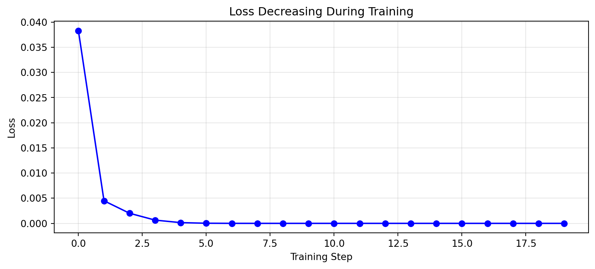

flowchart TB
subgraph forward["Forward Pass"]
x["x = 2"] --> mul["a = x * 3<br/>a = 6"]
mul --> add["b = a + 1<br/>b = 7"]
add --> square["c = b**2<br/>c = 49"]
end
Module 02: Autograd
Introduction
The magic that makes neural networks trainable. Automatic differentiation computes gradients through any computation - the foundation of backpropagation.
Autograd (automatic differentiation) is how we compute gradients automatically. When you do loss.backward() in PyTorch, autograd figures out how to adjust every parameter to reduce the loss.
Why is this essential for LLMs?
- Millions of parameters: An LLM has millions (or billions) of numbers to adjust. We can’t compute gradients by hand.
- Complex computations: Attention, embeddings, layer norms - the gradient must flow through all of them.
- Training loop: Every training step computes gradients to update weights.
Without autograd, deep learning wouldn’t be practical.
Intuition: The Computational Graph
Every computation builds a directed acyclic graph (DAG) dynamically as operations execute. This is called “define-by-run” - the graph structure is determined by the actual code path taken, which can differ each forward pass (useful for control flow like conditionals and loops).
Think of a computation as a graph of operations:
Forward pass: Compute values flowing down (x -> a -> b -> c)
Backward pass: Compute gradients flowing up (c -> b -> a -> x)
- dc/dc = 1 (output gradient is always 1)
- dc/db = 2b = 14 (derivative of b^2)
- dc/da = dc/db x db/da = 14 x 1 = 14
- dc/dx = dc/da x da/dx = 14 x 3 = 42
The chain rule connects everything: multiply local gradients as you go back.
Computational Graph: Forward and Backward
Here’s a more detailed example showing both passes:
flowchart TB
subgraph inputs["Inputs"]
x["x = 2.0"]
w["w = 0.5"]
b["b = 0.1"]
t["target = 0.8"]
end
subgraph forward["Forward Pass"]
x --> mul["z1 = w*x = 1.0"]
w --> mul
mul --> add["z2 = z1+b = 1.1"]
b --> add
add --> diff["diff = z2-target = 0.3"]
t --> diff
diff --> loss["loss = diff**2 = 0.09"]
end
flowchart BT
subgraph backward["Backward Pass - Gradients"]
loss2["loss<br/>grad = 1.0"] --> diff2["diff<br/>grad = 2*diff = 0.6"]
diff2 --> add2["z2<br/>grad = 0.6"]
diff2 -.-> t2["target<br/>(no grad)"]
add2 --> mul2["z1<br/>grad = 0.6"]
add2 --> b2["b<br/>grad = 0.6"]
mul2 --> x2["x<br/>grad = w*0.6 = 0.3"]
mul2 --> w2["w<br/>grad = x*0.6 = 1.2"]
end
The Math
Chain Rule
For composed functions f(g(x)):
d/dx[f(g(x))] = f'(g(x)) x g'(x)This extends to any depth - just multiply local derivatives along the path.
Common Gradients
| Operation | Forward | Local Gradient |
|---|---|---|
c = a + b |
sum | dc/da = 1, dc/db = 1 |
c = a * b |
product | dc/da = b, dc/db = a |
c = a ** n |
power | dc/da = n x a^(n-1) |
c = exp(a) |
exp | dc/da = exp(a) |
c = log(a) |
log | dc/da = 1/a |
c = tanh(a) |
tanh | dc/da = 1 - tanh^2(a) |
c = relu(a) |
ReLU | dc/da = 1 if a > 0 else 0 |
Matrix Multiplication Gradients
For C = A @ B:
- dL/dA = dL/dC @ B.T
- dL/dB = A.T @ dL/dC
This is why matrix shapes matter so much!
Gradient Accumulation
When a value is used multiple times, gradients ADD:
flowchart TB
subgraph accum["Gradient Accumulation: c = a * a"]
a["a = 3"] --> mul1["*"]
a --> mul2["*"]
mul1 --> c["c = 9"]
mul2 --> c
end
subgraph backward["Backward: each path contributes"]
c2["c<br/>grad = 1"] --> path1["path 1: grad = a = 3"]
c2 --> path2["path 2: grad = a = 3"]
path1 --> a2["a<br/>grad = 3 + 3 = 6 = 2a"]
path2 --> a2
end
Code Walkthrough
Let’s explore autograd interactively:
import torch
print(f"PyTorch version: {torch.__version__}")PyTorch version: 2.9.1Building a Simple Autograd Engine
We’ll build a simple autograd engine (inspired by Andrej Karpathy’s micrograd). This handles scalar values only - PyTorch’s autograd extends these same principles to tensors of any shape, which is what makes it powerful for real neural networks.
class Value:
"""A scalar value that tracks its gradient."""
def __init__(self, data, children=(), op='', label=''):
self.data = data
self.grad = 0.0
self._backward = lambda: None
self._prev = set(children)
self._op = op
self.label = label
def __repr__(self):
return f"Value(data={self.data}, grad={self.grad})"
def __add__(self, other):
other = other if isinstance(other, Value) else Value(other)
out = Value(self.data + other.data, (self, other), '+')
def _backward():
self.grad += out.grad # d(a+b)/da = 1
other.grad += out.grad # d(a+b)/db = 1
out._backward = _backward
return out
def __mul__(self, other):
other = other if isinstance(other, Value) else Value(other)
out = Value(self.data * other.data, (self, other), '*')
def _backward():
self.grad += other.data * out.grad # d(a*b)/da = b
other.grad += self.data * out.grad # d(a*b)/db = a
out._backward = _backward
return out
def __pow__(self, other):
assert isinstance(other, (int, float)), "only supporting int/float powers"
out = Value(self.data ** other, (self,), f'**{other}')
def _backward():
self.grad += (other * self.data ** (other - 1)) * out.grad
out._backward = _backward
return out
def __neg__(self):
return self * -1
def __sub__(self, other):
return self + (-other)
def __radd__(self, other):
return self + other
def __rmul__(self, other):
return self * other
def tanh(self):
import math
t = math.tanh(self.data)
out = Value(t, (self,), 'tanh')
def _backward():
self.grad += (1 - t ** 2) * out.grad
out._backward = _backward
return out
def relu(self):
out = Value(max(0, self.data), (self,), 'relu')
def _backward():
self.grad += (self.data > 0) * out.grad
out._backward = _backward
return out
def exp(self):
import math
out = Value(math.exp(self.data), (self,), 'exp')
def _backward():
self.grad += out.data * out.grad
out._backward = _backward
return out
def log(self):
import math
out = Value(math.log(self.data), (self,), 'log')
def _backward():
self.grad += (1.0 / self.data) * out.grad
out._backward = _backward
return out
def __truediv__(self, other):
return self * (other ** -1)
def backward(self):
# Topological sort to process in correct order
topo = []
visited = set()
def build_topo(v):
if v not in visited:
visited.add(v)
for child in v._prev:
build_topo(child)
topo.append(v)
build_topo(self)
# Go backwards, applying chain rule
self.grad = 1.0
for v in reversed(topo):
v._backward()Testing Our Value Class
# Create some Values
a = Value(2.0, label='a')
b = Value(3.0, label='b')
print(f"a = {a}")
print(f"b = {b}")
print(f"\nInitially, gradients are 0.0")a = Value(data=2.0, grad=0.0)
b = Value(data=3.0, grad=0.0)
Initially, gradients are 0.0# Perform a computation
c = a * b
c.label = 'c'
print(f"c = a * b = {c.data}")
print(f"\nNow let's compute gradients with backward():")
c.backward()
print(f"\ndc/da = {a.grad} (should be b = 3.0)")
print(f"dc/db = {b.grad} (should be a = 2.0)")c = a * b = 6.0
Now let's compute gradients with backward():
dc/da = 3.0 (should be b = 3.0)
dc/db = 2.0 (should be a = 2.0)Verifying Gradients Numerically
# Let's verify: increase 'a' by a tiny amount
epsilon = 0.0001
a_original = 2.0
b_val = 3.0
c_original = a_original * b_val
c_perturbed = (a_original + epsilon) * b_val
numerical_gradient = (c_perturbed - c_original) / epsilon
print(f"Numerical gradient dc/da = {numerical_gradient:.4f}")
print(f"Our computed gradient: {a.grad}")
print(f"\nThey match! (The tiny difference is numerical precision)")Numerical gradient dc/da = 3.0000
Our computed gradient: 3.0
They match! (The tiny difference is numerical precision)The Chain Rule in Action
# Let's trace through: c = (a + b) * b
a = Value(2.0, label='a')
b = Value(3.0, label='b')
sum_ab = a + b
sum_ab.label = 'sum'
c = sum_ab * b
c.label = 'c'
c.backward()
print(f"Expression: c = (a + b) * b")
print(f"a = {a.data}, b = {b.data}")
print(f"sum = a + b = {sum_ab.data}")
print(f"c = sum * b = {c.data}")
print(f"\nGradients:")
print(f"dc/da = {a.grad} (expected: b = 3)")
print(f"dc/db = {b.grad} (expected: sum + a = 5 + 3 = 8)")Expression: c = (a + b) * b
a = 2.0, b = 3.0
sum = a + b = 5.0
c = sum * b = 15.0
Gradients:
dc/da = 3.0 (expected: b = 3)
dc/db = 8.0 (expected: sum + a = 5 + 3 = 8)Training a Neuron
Let’s actually train a neuron to output a target value!
import matplotlib.pyplot as plt
# Training loop
x_val = 2.0
target_val = 0.8
# Learnable parameters (start with small random values)
w = 0.3
b = 0.1
learning_rate = 0.5
losses = []
print("Training a neuron to output 0.8 when input is 2.0")
print("=" * 50)
for step in range(20):
# Create fresh Values (gradients reset)
x = Value(x_val, label='x')
w_v = Value(w, label='w')
b_v = Value(b, label='b')
target = Value(target_val, label='target')
# Forward pass
y = (w_v * x + b_v).tanh()
loss = (y - target) ** 2
# Backward pass
loss.backward()
# Gradient descent update
w = w - learning_rate * w_v.grad
b = b - learning_rate * b_v.grad
losses.append(loss.data)
if step % 4 == 0:
print(f"Step {step:2d}: y={y.data:.4f}, loss={loss.data:.6f}, w={w:.4f}, b={b:.4f}")
print(f"\nFinal output: {y.data:.4f}")
print(f"Target: {target_val}")
print("Pretty close!")Training a neuron to output 0.8 when input is 2.0
==================================================
Step 0: y=0.6044, loss=0.038272, w=0.5484, b=0.2242
Step 4: y=0.8121, loss=0.000146, w=0.4650, b=0.1825
Step 8: y=0.8002, loss=0.000000, w=0.4595, b=0.1798
Step 12: y=0.8000, loss=0.000000, w=0.4594, b=0.1797
Step 16: y=0.8000, loss=0.000000, w=0.4594, b=0.1797
Final output: 0.8000
Target: 0.8
Pretty close!# Visualize the training
plt.figure(figsize=(10, 4))
plt.plot(losses, 'b-o')
plt.xlabel('Training Step')
plt.ylabel('Loss')
plt.title('Loss Decreasing During Training')
plt.grid(True, alpha=0.3)
plt.show()
print("\nThe loss decreases because gradients tell us which way to adjust w and b!")
The loss decreases because gradients tell us which way to adjust w and b!PyTorch Autograd
Now let’s see how PyTorch does the same thing:
# Create tensors that track gradients
x = torch.tensor(2.0, requires_grad=True)
w = torch.tensor(3.0, requires_grad=True)
b = torch.tensor(1.0, requires_grad=True)
# Forward pass
y = w * x + b # Linear function
loss = y ** 2 # Square loss
# Backward pass - PyTorch computes all gradients automatically
loss.backward()
print(f"dloss/dx = {x.grad}") # 84.0
print(f"dloss/dw = {w.grad}") # 56.0
print(f"dloss/db = {b.grad}") # 14.0dloss/dx = 42.0
dloss/dw = 28.0
dloss/db = 14.0# With vectors
x = torch.tensor([1.0, 2.0, 3.0], requires_grad=True)
w = torch.tensor([0.1, 0.2, 0.3], requires_grad=True)
# Forward pass
y = (x * w).sum() # Dot product
print(f"y = x . w = {y.item():.4f}")
# Backward pass
y.backward()
print(f"\ndy/dx = {x.grad}") # Should be w
print(f"dy/dw = {w.grad}") # Should be xy = x . w = 1.4000
dy/dx = tensor([0.1000, 0.2000, 0.3000])
dy/dw = tensor([1., 2., 3.])# With matrices (like in attention)
Q = torch.randn(2, 3, requires_grad=True) # Query
K = torch.randn(2, 3, requires_grad=True) # Key
# Attention scores: Q @ K^T
scores = Q @ K.T
loss = scores.sum()
loss.backward()
print(f"Q shape: {Q.shape}")
print(f"K shape: {K.shape}")
print(f"scores shape: {scores.shape}")
print(f"\ndloss/dQ shape: {Q.grad.shape}")
print(f"dloss/dK shape: {K.grad.shape}")
print("\nGradients have the same shape as the original tensors!")Q shape: torch.Size([2, 3])
K shape: torch.Size([2, 3])
scores shape: torch.Size([2, 2])
dloss/dQ shape: torch.Size([2, 3])
dloss/dK shape: torch.Size([2, 3])
Gradients have the same shape as the original tensors!Exercises
Exercise 1: Verify the Gradient of x^3
# Verify the gradient of x^3 at x=2
# Expected: d/dx[x^3] = 3x^2 = 12
x = Value(2.0, label='x')
y = x ** 3
y.backward()
print(f"x = {x.data}")
print(f"y = x^3 = {y.data}")
print(f"dy/dx = {x.grad} (expected: 12.0)")x = 2.0
y = x^3 = 8.0
dy/dx = 12.0 (expected: 12.0)Exercise 2: Softmax Gradient
# Compute gradient of softmax numerator
# If y = exp(x) / (exp(x) + exp(z)), what is dy/dx?
x = Value(1.0, label='x')
z = Value(2.0, label='z')
exp_x = x.exp()
exp_z = z.exp()
y = exp_x / (exp_x + exp_z)
y.backward()
print(f"x = {x.data}, z = {z.data}")
print(f"y = softmax(x)[0] = {y.data:.4f}")
print(f"dy/dx = {x.grad:.4f}")
print(f"\nThis is the gradient that flows back through softmax!")x = 1.0, z = 2.0
y = softmax(x)[0] = 0.2689
dy/dx = 0.1966
This is the gradient that flows back through softmax!Exercise 3: ReLU vs Tanh Gradients
# Compare ReLU vs tanh gradients
for x_val in [-2.0, -0.5, 0.5, 2.0]:
x_relu = Value(x_val)
x_tanh = Value(x_val)
y_relu = x_relu.relu()
y_tanh = x_tanh.tanh()
y_relu.backward()
y_tanh.backward()
print(f"x={x_val:5.1f}: ReLU grad={x_relu.grad:.3f}, tanh grad={x_tanh.grad:.3f}")
print("\nNotice: ReLU has 0 or 1, tanh is smooth but saturates for large |x|")x= -2.0: ReLU grad=0.000, tanh grad=0.071
x= -0.5: ReLU grad=0.000, tanh grad=0.786
x= 0.5: ReLU grad=1.000, tanh grad=0.786
x= 2.0: ReLU grad=1.000, tanh grad=0.071
Notice: ReLU has 0 or 1, tanh is smooth but saturates for large |x|Backpropagation in Neural Networks
Here’s how gradients flow backward through a neural network layer:
flowchart LR
subgraph forward["Forward: y = tanh(W @ x + b)"]
x["x (input)"] --> matmul["z1 = W @ x"]
W["W (weights)"] --> matmul
matmul --> add["z2 = z1 + b"]
b["b (bias)"] --> add
add --> tanh["y = tanh(z2)"]
end
flowchart RL
subgraph backward["Backward: Compute Gradients"]
loss["L = (y-t)^2"] -->|"dL/dy = 2(y-t)"| tanh2["tanh"]
tanh2 -->|"dL/dz2 = dL/dy * (1-y^2)"| add2["+"]
add2 -->|"dL/db = dL/dz2"| b2["b (UPDATE!)"]
add2 -->|"dL/dz1 = dL/dz2"| matmul2["@"]
matmul2 -->|"dL/dW = dL/dz1 * x^T"| W2["W (UPDATE!)"]
end
Key insights:
- Gradients flow backward: Starting from the loss, we trace back through every operation
- Chain rule connects layers: Multiply local gradients along the path
- Accumulation: If a value is used multiple times, gradients add up
- Shape matters: dL/dW must have the same shape as W for the update
Detaching Tensors and Stopping Gradients
Sometimes you want to stop gradient flow. PyTorch provides several mechanisms:
Using detach()
x = torch.tensor([1.0, 2.0, 3.0], requires_grad=True)
y = x * 2
z = y.detach() # z has no gradient history
print(f"y.requires_grad: {y.requires_grad}")
print(f"z.requires_grad: {z.requires_grad}")
# z is now a "constant" - no gradients flow through it
loss = z.sum()
# loss.backward() would NOT compute gradients for xy.requires_grad: True
z.requires_grad: FalseUsing no_grad()
x = torch.tensor([1.0, 2.0], requires_grad=True)
y = x * 2
# Compute without building graph (saves memory)
with torch.no_grad():
z = y * 3
print(f"Inside no_grad, z.requires_grad: {z.requires_grad}")
# Common use: inference
model_output = y # pretend this is model output
with torch.no_grad():
prediction = model_output.argmax() # no gradients neededInside no_grad, z.requires_grad: FalseWhen to Stop Gradients
- Inference: No training, no gradients needed
- Frozen layers: Transfer learning with some layers fixed
- Metrics: Computing accuracy, loss for logging (not backprop)
- Target values: In losses like MSE, the target is a constant
Memory Implications
Why Autograd Uses Memory
During the forward pass, autograd stores intermediate values needed for gradient computation:
# Each operation stores data for backward pass
x = torch.randn(1000, 1000, requires_grad=True)
y = x @ x.T # Stores x for gradient computation
z = y.relu() # Stores y (to know which elements > 0)
out = z.mean() # Stores z
# All of x, y, z stay in memory until backward() completes
out.backward()
# Now intermediate tensors can be freedMemory Grows with Depth
For a model with L layers: - Forward pass: O(L) memory for activations - Each activation tensor can be large (batch_size x hidden_dim) - LLMs with 100+ layers and large hidden dims = huge memory
Gradient Checkpointing
Trade compute for memory by recomputing activations during backward:
from torch.utils.checkpoint import checkpoint
def expensive_layer(x):
"""A layer we want to checkpoint."""
return x.relu().pow(2)
x = torch.randn(100, 100, requires_grad=True)
# Without checkpointing: stores intermediate activations
y_normal = expensive_layer(x)
# With checkpointing: discards intermediates, recomputes during backward
y_checkpoint = checkpoint(expensive_layer, x, use_reentrant=False)
print(f"Both produce same result: {torch.allclose(y_normal, y_checkpoint)}")Both produce same result: TrueIn practice, checkpoint every few layers to reduce memory by ~sqrt(L).
Common Pitfalls
1. Forgetting to Zero Gradients
x = torch.tensor(2.0, requires_grad=True)
# First backward
y = x ** 2
y.backward()
print(f"After first backward: x.grad = {x.grad}")
# Second backward without zeroing - gradients ACCUMULATE!
y = x ** 2
y.backward()
print(f"After second backward: x.grad = {x.grad}") # 8.0, not 4.0!
# Always zero gradients before backward in training loops
x.grad.zero_()
y = x ** 2
y.backward()
print(f"After zeroing: x.grad = {x.grad}") # Back to 4.0After first backward: x.grad = 4.0
After second backward: x.grad = 8.0
After zeroing: x.grad = 4.02. In-place Operations
x = torch.tensor([1.0, 2.0], requires_grad=True)
y = x * 2
# This would break the graph (commented to avoid error):
# y.add_(1) # In-place operation on a tensor needed for gradient
# Instead, use out-of-place operations:
y = y + 1 # Creates new tensor, graph preserved
y.sum().backward()
print(f"x.grad: {x.grad}")x.grad: tensor([2., 2.])3. Losing requires_grad
x = torch.tensor([1.0, 2.0], requires_grad=True)
# Can't call .numpy() directly on a tensor requiring grad:
# y = x.numpy() # RuntimeError: Can't call numpy() on tensor that requires grad
# Must detach first - this explicitly breaks the graph
y = x.detach().numpy()
print(f"y is now numpy array: {type(y)}")
# Converting back loses gradient tracking:
z = torch.from_numpy(y)
print(f"z.requires_grad: {z.requires_grad}") # False
# Be careful when mixing numpy and autogrady is now numpy array: <class 'numpy.ndarray'>
z.requires_grad: False4. Backward Through Non-Scalar
x = torch.tensor([1.0, 2.0, 3.0], requires_grad=True)
y = x ** 2 # Vector output
# This fails (commented to avoid error):
# y.backward() # RuntimeError: need gradient argument
# For non-scalar outputs, provide a gradient tensor:
y.backward(torch.ones_like(y)) # Equivalent to y.sum().backward()
print(f"x.grad: {x.grad}")x.grad: tensor([2., 4., 6.])Summary
Key takeaways:
- Gradients flow backward through the computational graph
- Chain rule connects everything: multiply local gradients
- Gradients accumulate when a value is used multiple times
- Training = gradient descent: use gradients to adjust parameters
- PyTorch autograd does this automatically for any computation
- Memory matters: intermediate activations consume memory; use
detach(),no_grad(), or gradient checkpointing - Zero gradients: always zero gradients before each backward pass in training loops
What’s Next
In Module 03: Tokenization, we’ll learn how text gets converted into numbers that our model can process. Autograd will be working behind the scenes during training, but we need input data first!